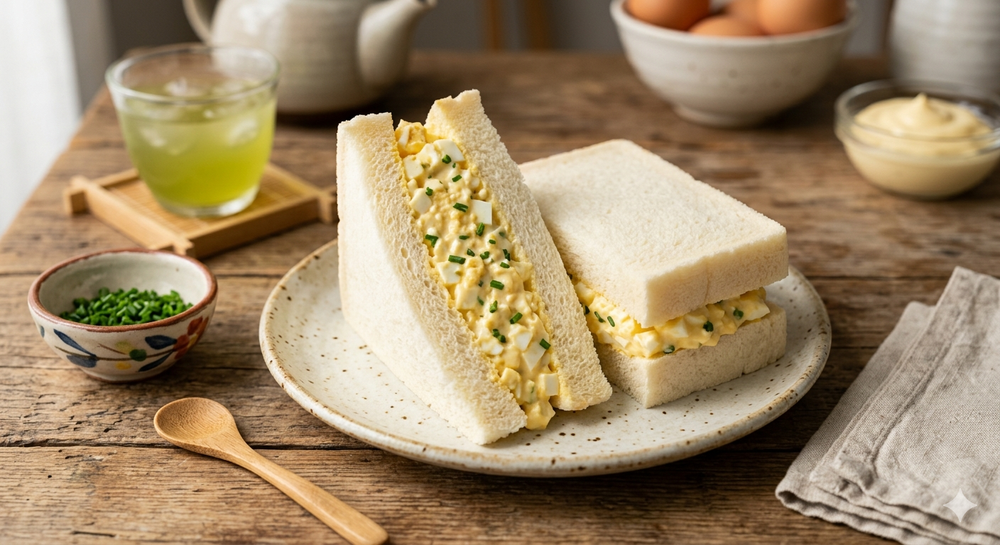

Japanese Style Egg Sandwhich

Description
A soft, creamy egg sandwich popular in Japan, known for its fluffy texture and slightly sweet, rich flavor.
Ingredients
- Eggs
- Japanese mayonnaise (e.g., Kewpie)
- Salt
- Sugar (optional, small pinch)
- Milk or cream (optional, for extra fluffiness)
- Soft white bread (shokupan if possible)
- Butter (optional)
Steps
- Boil eggs (about 10–11 minutes), then cool and peel.
- Mash the eggs in a bowl until slightly chunky.
- Add Japanese mayonnaise, a pinch of salt, and a little sugar if desired.
- Mix until creamy; add a small splash of milk or cream for extra smoothness.
- Lightly butter the bread (optional).
- Spread the egg mixture evenly on one slice of bread.
- Top with another slice, trim crusts if desired, and cut in half.
- Serve chilled or at room temperature.
Home